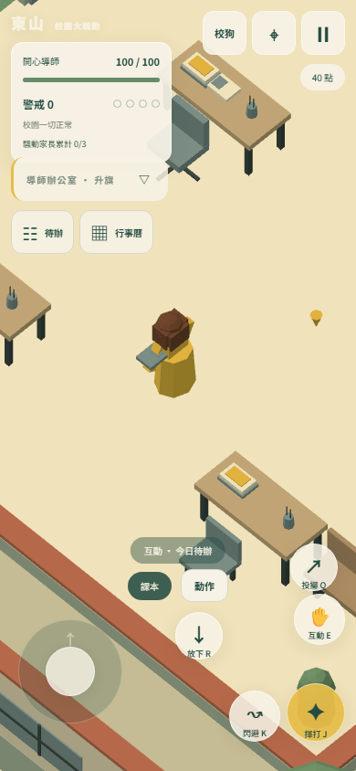
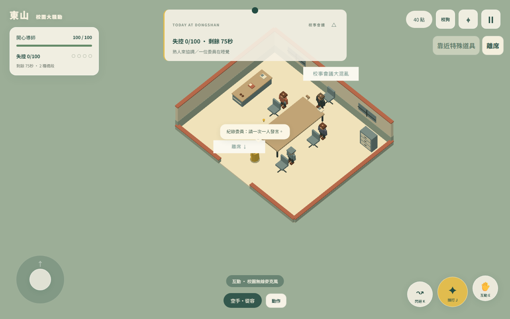
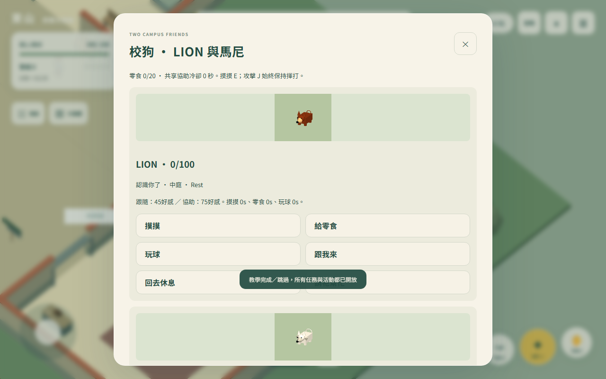

這是什麼遊戲
《東山校園大騷動》是一款搞笑的 3D 校園沙盒遊戲。你扮演「開心導師」：一位棕色鮑伯頭、穿黃色洋裝、永遠面無表情的音樂班導師。
在校園裡你可以自由探索、搬東西、敲東西、丟東西，看學生、家長和教職員怎麼反應。鬧大了會有人去通知家長或老師來追你，你要想辦法甩開他們，再讓校園恢復平靜。
- 沒有固定目標：任務和活動都是選擇性的，想亂逛也可以。
- 不會真的輸：體力歸零只會被送到保健室，看一份事件報告後校園重置，點數與完成紀錄都會保留。
- 還有兩隻校狗可以當朋友：LION 和馬尼不會受傷，混熟了還會幫你忙。所有任務與活動一開始就開放，沒有章節要解鎖。
- 遊戲內的學校、人物都是虛構的，沒有血腥內容。
開始遊戲
用瀏覽器打開 遊戲首頁 就能玩，不用下載、不用註冊帳號。電腦和手機都支援，手機直拿橫拿都可以。
- 在標題畫面按「開始遊戲」。
- 第一次進入會從導師辦公室出發，並開始「日常差事教學」，約 3–5 分鐘：移動 → 拿考卷 → 送到教室 → 練習揮打與投擲 → 閃避 → 躲進工具間 → 查看任務與行事曆。
- 教學隨時可以跳過，也能在暫停選單按「重看教學」。建議新手先把教學走完一次。
- 需要支援 WebGL 2 的瀏覽器（近幾年的 Chrome、Edge、Safari、Firefox 都可以）。
- 遊戲不會要求麥克風或任何權限；遊戲裡的「無線麥克風」只是道具。
- 進度會自動存在這個瀏覽器裡。換裝置或清除瀏覽器資料前，請先到「存檔管理」按「匯出 JSON」備份。
- 背景音樂包含原曲與場景改編版，音效使用程式合成。可以在「設定」調音樂、音效音量或靜音；靜音也能完成所有目標。
基本操作
鏡頭固定從斜上方往下看，不能旋轉；往「畫面上方」推就是往畫面上方走。
| 動作 | 電腦（鍵盤／滑鼠） | 手機（觸控） |
|---|---|---|
| 移動 | WASD 或方向鍵 | 左下角搖桿 |
| 快跑 | 按住 Shift | 搖桿推到底 |
| 面向 | 滑鼠指向地面 | 跟著移動方向 |
| 揮打 | J 或滑鼠左鍵 | 右下「揮打」鍵 |
| 閃避（短距離翻滾） | K 或 空白鍵 | 右下「閃避」鍵 |
| 互動（拿取、對話、使用、摸狗） | E | 右下「互動」鍵 |
| 開動作選單（放下、戴上、歸還、演奏…） | 畫面上的「動作」按鈕 | 長按「互動」或按「動作」 |
| 投擲手上的東西 | Q | 拿著東西時才出現的「投擲」鍵 |
| 放下手上的東西 | R | 拿著東西時出現的「放下 R」鍵，或「動作」→ 放下 |
| 點名；會議中的特殊互動 | F | 「動作」→ 點名；會議中用情境鍵 |
| 合唱指揮 | Enter | 合唱時出現的「指揮」鍵 |
| 校狗指令（給零食、玩球、跟我來、請牠幫忙） | 右上「校狗」卡片 | 同左 |
| 離開會議 | 門口按 E，或畫面上的「離席」 | 同左 |
| 暫停／選單 | Esc | 畫面上的暫停按鈕 |
拿東西的規則
- 一次只能拿一件。校長假髮和眼鏡另外戴在頭上，戴著也能拿別的東西。
- 鋼琴、咖啡機拿不起來，只能在旁邊互動。
- 辦公椅只能推：站到椅子後面再互動。
- 重的東西（獎盃、譜架、垃圾桶）拿著走會變慢。
- 暫停選單的「操作說明」「道具說明」可以隨時查按鍵與每件道具的用法。
J／揮打永遠是攻擊，不會變成摸狗或清理；要摸狗、用餐、拖地都用 E／互動。
畫面介紹
畫面左上看狀態，右上開選單，下方是操作區。下圖是手機直式畫面；電腦版也會顯示搖桿與操作按鈕，並可使用鍵盤與滑鼠操作，版面會依螢幕尺寸調整。

| 位置 | 元件 | 說明 |
|---|---|---|
| 左上 | 體力條 | 開心導師的體力，滿值 100。歸零會被送到保健室。 |
| 左上 | 警戒 0–4（四個小圓點） | 全校對你的注意程度，下方一行字會寫原因。越高越多人追你。 |
| 左上 | 騷動家長累計 0/3 | 累計滿 3 位後，揮打有機會觸發「校事會議」（見後文）。 |
| 中上 | TODAY AT DONGSHAN 提示卡 | 所在區域、目前時段（升旗、午餐…）、要做的事與任務進度。點標題可收合。 |
| 中上 | 待辦、行事曆 | 選任務（今日待辦）與活動日（校園行事曆）。 |
| 右上 | 「校狗」按鈕 | 查看 LION 與馬尼的好感、位置、任務，並下指令。 |
| 右上 | 地圖按鈕（準星圖示） | 校園地圖：綠點是你，黃點是目標或任務物件。 |
| 右上 | 暫停按鈕 | 暫停並開啟選單：操作說明、道具說明、圖鑑、校園生活、會議紀錄冊、設定、存檔管理。 |
| 右上 | 點數 | 校園點數，在合作社買飲料、狗零食與外觀飾品。 |
| 下方中央 | 提示、手持物、動作 | 靠近可互動的東西會顯示「互動：…」；下一格是手上拿的東西；「動作」開啟更多選項。 |
| 右下（手機） | 放下 R | 手上有東西時才出現，一鍵放下。 |
| 地面 | 黃色圓圈 | 任務交付或定位點，在圈旁互動或放下。 |
遊戲玩法
校園區域
| 區域 | 可以做什麼 |
|---|---|
| 導師辦公室 | 出發點；考卷、資料夾、咖啡機、時鐘；理化老師從這裡出發 |
| 一般教室 | 桌椅、課本、粉筆擦、陀螺；講臺後可躲藏；後牆有午餐餐車 |
| 音樂教室 | 鋼琴、鼓棒、直笛、三角鐵、譜架、無線麥克風 |
| 校長室 | 校長假髮、眼鏡、筆電、獎盃 |
| 共用走廊 | 連接各區；掃把、垃圾桶；工具間可躲藏 |
| 中庭 | 學生集合、升旗、主要路口；活動日的舞臺；東南角是餵狗角 |
| 操場一角 | 籃球、球拍、碼錶、三角錐 |
| 校門與警衛室 | 家長入口、失物招領 |
| 合作社 | 買涼茶（10 點，恢復 30 體力）、狗零食（5 點）、外觀飾品；幫阿姨整理商品賺 10 點 |
| 保健室 | 校護免費恢復體力（只在校園平靜時） |
| 洗手區、工具儲藏間 | 走廊旁、保健室兩側；校安巡查事件的發生地點 |
騷動怎麼發生、怎麼收場
- 鬧事：打人、摔壞家具、拿走校長的東西被看到，警戒就會升高。沒人看到的事不會馬上記在你頭上。
- 有人通報：學生可能打電話給家長、跑去告狀，或拿手機拍你。破壞物品則會引來老師。
- 家長入校：畫面會先預告約 6 秒，家長從校門沿路走進來。家長有 19 種，各有招式與弱點。同時最多 3 位家長、2 位老師追你。
- 甩開視線：追逐者失去視線後會到「最後看到你的地方」搜尋一陣子。躲進工具間或講臺後面；但如果躲進去時被看到，對方還是會來查。
- 警戒下降：停止鬧事且沒人看著你，警戒會慢慢降回 0。警戒 0–1 時，到講臺或鋼琴「假裝上課」可以降得更快。跑進保健室或換房間不會洗掉警戒。
老師的特殊技能
- 點名：叫 6 公尺內的學生過來集合，冷卻 12 秒。正在暈眩、反擊或逃跑的學生不一定聽話。
- 無線麥克風：平常在音樂教室，活動日在中庭舞臺右側。拿著按 F 是「擴音點名」，範圍加大到 10 公尺。按 Q 丟出去，落地會廣播 3 秒，把附近的人引去調查，是調虎離山的好幫手。
- 假裝上課：在講臺或鋼琴旁互動，警戒低時可加速平息。
任務與活動
- 今日待辦：共 24 項任務，分日常、惡作劇、技巧、長任務。一次追蹤一項，可隨時取消、免費重試。不想打架也有很多非戰鬥任務可選。
- 校園行事曆：四個活動日，各有 4 項任務——親師日、校慶、合唱團比賽、期末考。切換活動會重置校園、取消未完成任務，但已完成紀錄會保留。
- 合唱指揮：合唱團比賽的最後一關要跟著節拍按 Enter（手機按「指揮」），共 32 拍。設定裡可以開「指揮輔助」放寬判定。
| 項目 | 首次完成獲得 |
|---|---|
| 一般任務 | 30 點 |
| 長任務 | 60 點 |
| 活動任務 | 40 點 |
| 活動四項全部完成 | 80 點 |
重玩不再給點，但可以拿更好的評級與稱號。點數只用來買飲料和外觀，所有玩法都不需要點數。
體力歸零時
你會被送到保健室，看到一份「保健室事件報告」，統計這次騷動發生了什麼。接著校園重置成平靜狀態，體力回滿 100；點數、已完成任務、收藏都不會消失。
校事會議大混亂
鬧太大時，你可能會被拉進四人會議室開校事會議。會議有 75 秒倒數，結束後會回到原本的校園。

怎麼觸發
- 左上角「騷動家長累計」到達 3/3（只算因你鬧事而實際到校的家長）。
- 之後每次揮打都有 50% 機率開會，空揮也算。抽中會先提示約 1 秒再入席。
- 散場後要等 60 秒校園時間才會再開，累計家長也重新算。
會議中怎麼玩
- 操作跟平常一樣：J 揮打、E 拿東西、Q 投擲、R 放下。會議室裡的委員都可以打。
- F（手機用情境鍵）使用特殊道具，例如敲議事鈴、切投影片、蓋評語印章、折紙飛機。
- 每場會抽 2–3 種「橋段」，共 16 種，每場內容不同。
- 畫面上的「失控值」會隨著你打人、推椅子、打斷發言而上升。
會議怎麼結束
| 情況 | 結果 |
|---|---|
| 75 秒倒數結束 | 回到保健室外 |
| 失控值到 100 | 回到保健室外 |
| 在門口按 E 或按「離席」 | 回到保健室外 |
| 在會議中體力歸零 | 回到保健室 |
散場後手上的東西、頭上的假髮眼鏡、進行中的任務都會保留，體力也會恢復。每場會議可以在暫停選單的「會議紀錄冊」回顧，還有 8 個稱號可以收集。
校狗 LION 與馬尼
校園裡有兩隻校狗：棕色柴犬 LION 與白色狐狸狗 馬尼。和牠們打好關係，牠們會跟著你走，甚至幫你咬住追兵的褲管。狗不會受傷，揮打和投擲都打不到牠們。

在哪裡找牠們
- 右上「校狗」按鈕可以看到兩隻狗的位置、好感與冷卻。
- LION 常去警衛室、操場邊與中庭；馬尼常去合作社、音樂教室外與中庭。
- 中庭東南、靠警衛室那側有「餵狗角」：兩個碗、水、休息墊。
- 理化老師（光頭、深色眼鏡）從辦公室出發，定時去餵狗。
怎麼開始
- 找理化老師按 E，領取 4 份專用狗零食。之後可在合作社用 5 點買 1 份，最多存 20 份。
- 靠近狗按 E 摸摸（約 0.8 秒，中途移動或被打會中斷）。
- 其他指令在「校狗」卡片點選：給零食、玩球、跟我來、回去休息、請牠幫忙。
| 怎麼增加好感 | 好感 | 同一隻狗的冷卻 |
|---|---|---|
| 摸摸 | +2 | 60 秒 |
| 給專用零食 | +6 | 180 秒 |
| 丟軟球，狗帶回你身邊 | +4 | 90 秒 |
| 陪牠走 20 公尺新路線 | +5 | 180 秒 |
| 好感達到 | 解鎖 |
|---|---|
| 0 | 摸摸、零食、玩球 |
| 20 | 牠看到你會主動打招呼 |
| 45 | 「跟我來」正式跟隨 45 秒；可能在校事會議旁聽 |
| 75 | 「請牠幫忙」咬住追兵 |
| 100 | 人物圖鑑裡的趣味評語 |
好感不會減少；好感增加時畫面會跳出狗的笑臉。冷卻中一樣可以摸，只是不加分。
請牠幫忙（好感 75）
點選 8 公尺內看得到的「敵對大人」（追你的家長或老師），或在卡片選狗，出現黃圈後按「請牠幫忙」。LION 咬褲管拖住對方最多 2.5 秒，馬尼從側邊拉扯分心最多 2 秒。兩隻狗共用 20 秒冷卻，學生和中立的人不能選。
六個校狗任務
每隻狗各有 3 個一次性任務，依序向理化老師接取。拿到指定物品後，放進餵狗角的黃色圓圈按 E，再回報理化老師。地圖黃點會標出取物與放置位置。
| 狗 | 任務 | 好感 | 獎勵零食 |
|---|---|---|---|
| LION | 把 LION 的碗從中庭送回碗位 | +8 | 2 |
| LION | 把警衛室附近的睡墊送到休息點 | +10 | 2 |
| LION | 從餵狗角陪牠走到操場入口 | +12 | 0 |
| 馬尼 | 把花圃附近的玩具送到餵狗角 | +8 | 2 |
| 馬尼 | 把收納箱旁的水碗送到馬尼碗位 | +10 | 2 |
| 馬尼 | 從餵狗角陪牠走到音樂教室外 | +12 | 0 |
散步任務不需要好感 45，從餵狗角選「跟我來」即可。
校園生活事件
校園會自己過日子：一天約 6 分鐘，依序是升旗 1 分鐘 → 自由活動 3 分鐘 → 午餐 1.5 分鐘 → 放學 30 秒，然後重新開始。目前時段顯示在上方提示卡。過程中會隨機發生下列事件，參與不參與都可以。
| 事件 | 在哪裡 | 你可以做什麼 |
|---|---|---|
| 營養午餐 | 一般教室後牆的餐車 | 靠近按 E、站定 1 秒：恢復 20 體力，冷卻 90 秒。有 10% 機率「肚子提出異議」，15 秒內走慢一點。 |
| 牛奶拋接 | 教室後方 | 學生打翻牛奶後，拿走廊的拖把靠近按 E、站定 1.5 秒清理。放久會變酸、發臭，靠太近會變慢。 |
| 橘子掃把棒球 | 操場邊 | 兩位學生用掃把打橘子，掃把最後會折斷。在旁邊看到就有紀念。 |
| 陀螺失物 | 教室後方 | 有學生「借走」了朋友的陀螺。打中拿著陀螺的人，按 E 撿起，再拿去還給失主。 |
| 校安巡查 | 洗手區／儲藏間 | 發現學生聚在一起，去找校安老師按 E 告知，老師會去現場把人帶回。 |
| 升旗與手機 | 中庭／教室 | 升旗時有學生躲在教室玩手機，去找校安老師按 E 告知。 |
- 移動、揮打或被打都會中斷用餐與拖地；用 J 打牛奶不會清乾淨。
- 每種事件都有一個一次性紀念，共 6 個，不給點數。在暫停選單的「校園生活」可看目前時段、冷卻與已收集的紀念。
- 「巡堂老師」已改名「校安老師」。
新手小技巧與常見問題
小技巧
- 先選一個「日常」任務練手，例如「請交回考卷」或「樂器請歸位」，熟悉拿放與黃色圓圈。
- 被追時不要硬打：繞中庭一圈、穿過走廊進教室，切斷視線後再躲。
- 閃避有很短的無敵時間，看到家長蓄力時按閃避。
- 體力低時，等警戒降回平靜再去保健室，或到合作社買涼茶、去餐車吃午餐。
- 任務卡關沒關係：取消重試不扣任何東西。
常見問題
- 任務要的東西卡在牆裡或找不到了？
- 打開「待辦」→「重置任務物件」，東西會回到拿得到的位置。
- 「歸還」為什麼沒反應？
- 要把東西帶回它原本的位置才能歸還。
- 考卷撒出去了怎麼辦？
- 考卷一包 3 張，把 3 張都撿回來就會重新變成一包。
- 跑進保健室為什麼家長還在追？
- 保健室不會洗掉警戒，校護也只在平靜時幫你恢復。先甩開追兵。
- 遊戲很卡？
- 到「設定」把畫質改成「Low · 輕量」，也可以勾選「減少動態效果」。
- 換手機或換瀏覽器，進度還在嗎？
- 進度只存在原本的瀏覽器裡。先在舊裝置的「存檔管理」按「匯出 JSON」，再到新裝置按「匯入 JSON」。
- 重新打開遊戲，剛剛的追逐怎麼不見了？
- 遊戲只存點數、任務、收藏等長期紀錄；每次重新進入都從平靜的校園開始。
- 同時開了兩個分頁？
- 只有一個分頁會寫入存檔。想用另一個分頁繼續玩，在「存檔管理」按「接管其他分頁寫入」。
- 揮打一下怎麼就被拉進會議室？
- 騷動家長累計滿 3 位後，揮打有機會開校事會議。不想開會就先別揮打；已經在會議室裡，可以按「離席」。
- 狗為什麼不跟我走？
- 正式跟隨要好感 45，一次只能帶一隻，每次 45 秒。先摸摸、給零食、玩球刷好感。